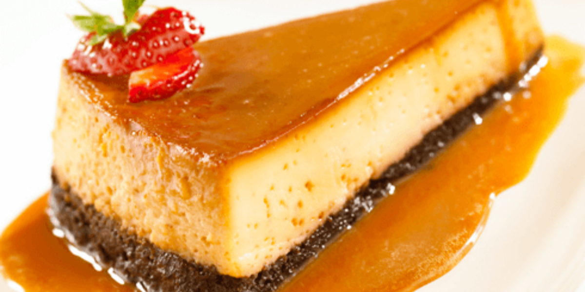

Tres Leches
Postre elaborado con un pan bañado en una salsa de leche. El pan contiene harina de trigo, azúcar, esencia de vainilla y huevo; una vez horneado y frío,se baña con una mezcla de tres leches: condensada, evaporada y entera(aunque esta última se sustituye en algunos casos por crema).
Imposible
Postre exquisito y con presentación agradable, incluído entre los favoritos de la cocina mexicana. Consistente en un pastel de dos capas: una de flan y otra de bizcocho de chocolate. Las cuales se hornean juntas sin embargo, no se mezclan entre sí; siendo esta característica la que lo hace llamar “imposible”.Las dos mezclas tienen diferentes densidades, lo que provoca que la más densa(flan), vaya al fondo. Mientras que la más liviana,(bizcocho)suba.
Chocolate

Postre elaborado con un pan bañado en una salsa de leche. El pan contiene harina de trigo, azúcar, esencia de vainilla y huevo; una vez horneado y frío,se baña con una mezcla de tres leches: condensada, evaporada y entera(aunque esta última se sustituye en algunos casos por crema).